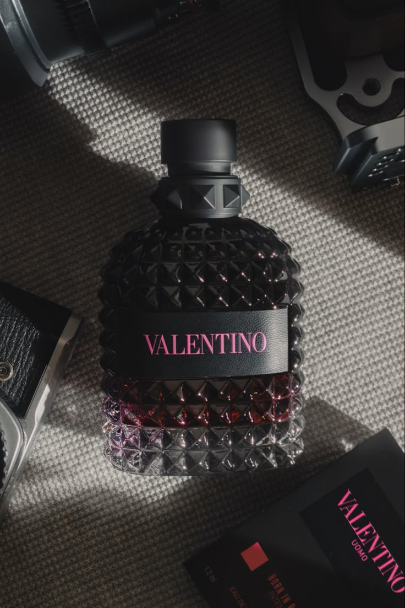

Valentino Born in Roma
A Valentino Born in Roma egy modern, római ihletésű illat, amely édes vaníliát, borókát és levendulát kever fás, pézsmás alapjegyekkel. Az elegáns üveg a luxust és kortárs stílust tükrözi.
Gisada Ambassador

A Gisada Ambassador egy luxus illat, fás, citrusos és fűszeres jegyekkel. A bergamot, gyömbér és szantálfa kombinációja elegáns, mégis intenzív karaktert ad a férfiak számára. Az üveg dizájnja prémium eleganciát sugároz.
Jean Paul Gaultier

A Jean Paul Gaultier parfümök egyediek, extravagánsak és gyakran szexi jegyeket hordoznak. Az üveg dizájnja és az illatkompozíciók merészek és figyelemfelkeltők, a férfiak és nők sokszínűségét ünneplik.